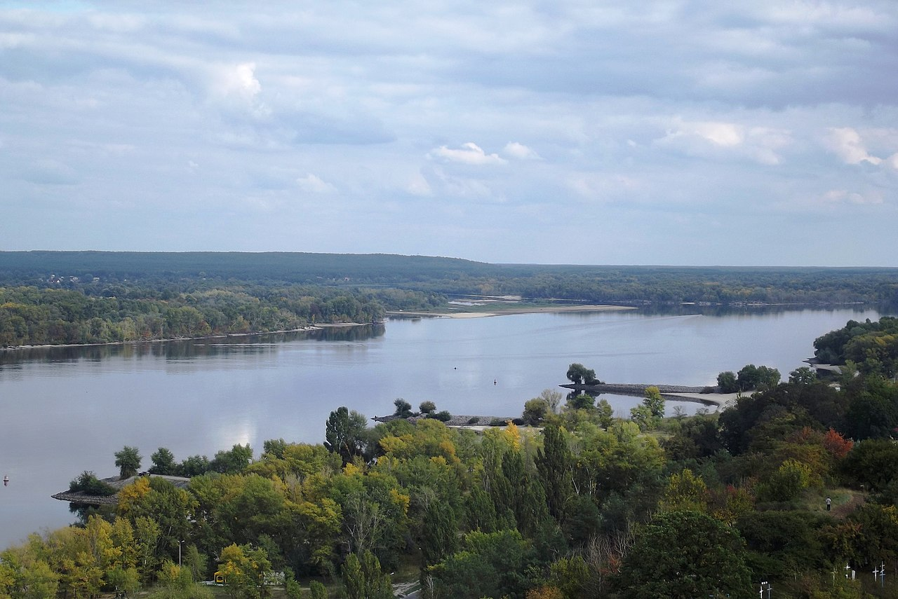

Ознайомлення
У самому серці Європи знаходиться прекрасна країна Україна. Вона з'єднує Схід і Захід, як міст, і відіграє важливу роль у житті обох. Україна має глибоке історичне багатогранне минуле, багату культуру та традиції. Україна - це країна з чудовою природою і рідкісним колоритом традицій, країна лікувального м'якого мікроклімату, самобутнього народного мистецтва і глибокої слов'янської культури. Багата історико-культурна спадщина, озера, річки, ліси з лісовими ягодами та грибами, лікувальні торф'яні грязі, мінеральні води, риболовля... все це створює необхідні передумови для організації та функціонування культурно-пізнавального, оздоровчого, спортивного, сільського та інших видів туризму! Україна є досить популярним туристичним напрямком як серед місцевих жителів, так і серед жителів сусідніх країн. Пляжний та оздоровчий відпочинок на узбережжі Чорного та Азовського морів, екологічний та гірськолижний відпочинок в Карпатах, багата історична спадщина роблять подорожі до України незабутніми та дивовижними. Завдяки численним мінеральним джерелам можливі оздоровчі тури до бальнеологічних курортів Моршина, Трускавець та Свалява. Останнім часом, завдяки активному розвитку туристичної сфери - оновленню готельної бази, будівництву нових готелів та благоустрою курортних зон, потік гостей в Україну поступово збільшується, роблячи подорожі нашою країною все більш комфортними та привабливими.
Рельєф
У рельєфі України переважають рівнини (95 % усієї площі), що належать до південно-західної окраїни Східноєвропейської рівнини. Вони поєднують Поліську, Придніпровську й Причорноморську низовини, що займають 70 % поверхні України, а також Волинську, Подільську, Придніпровську, Донецьку й інші височини. Пересічна абсолютна висота рівнин становить 175 м. В Україні знаходиться найвища точка Східноєвропейської рівнини — гора Берда, висотою 515 м над рівнем моря. Гірські масиви в Україні представлені частиною Карпатських гір — Українськими Карпатами, де розташована найвища вершина України — гора Говерла (2061 м над рівнем моря), й Кримськими горами, найвищою вершиною яких є гора Роман-Кош (1545 м). Сейсмічність України проявляється в західних, південно-західних і в південних районах, які розташовані поблизу потужного Середземноморсько-Альпійсько-Трансазійського сейсмогенного поясу планети, і де виділяються два основні сейсмічні регіони: Карпатський і Кримсько-Чорноморський. Значна частина території піддається впливам власних (місцевих) землетрусів і сильних підкорових землетрусів зони Вранча (Румунія)

Водотоки та водойми
На території України протікає 63 119 річок і струмків загальною довжиною понад 206 тис. км, із них довжиною 10 км і більше — 3302[52]. Більшість річок належить до басейну Чорного й Азовського морів і лише з 2 % території води мають стік до Балтійського басейну (Сян і Західний Буг із їхніми притоками). Головні річки — Дніпро, Сіверський Донець, Південний Буг, Дністер, Дунай. Озер у країні близько 20 тис., з них лише 43 мають площу 10 км² і більше[53]. Найбільше озеро Українського Полісся — Світязь має площу 27,5 км². Більшу площу мають солонуваті озера лиманного походження — придунайські (Ялпуг — 149 км²), причорноморські (штучно опріснений Кундук (Сасик) — 204,8 км²), кримські (солоне озеро Сасик-Сиваш — 71 км²). В Україні споруджено 1157 водосховищ і 28,8 тис. ставків[53]. Найбільші водосховища — на Дніпрі (Кременчуцьке, Каховське, Київське, Канівське). Найбільший лиман — Дністровський — 360 км². Найсолонішим є Куяльницький лиман — 157—227 ‰.

Ландшафти й фізико-географічне районування
У межах України за спільністю морфоструктурних рис виділяють два класи ландшафтних комплексів — рівнинний, що займає понад 93 % території, і гірський. Основні риси ландшафтної структури країни визначаються її розташуванням переважно в помірному поясі. Лише на Південному узбережжі Криму зустрічаються елементи субтропічних ландшафтів середземноморського типу. Територія України займає південно-західну частину Східноєвропейської фізико-географічної країни з чітко вираженою біокліматичною і ландшафтною широтною зональністю, частини Карпатської та Кримської гірських фізико-географічних країн. Рівнинна Україна охоплена чотирма природними зонами: зоною мішаних лісів (Полісся), зоною широколистяних лісів, лісостеповою зоною та степовою зоною.
Корисні копалини
Україна входить до числа провідних мінерально-сировинних держав світу. Поєднання різновікових (від архею до кайнозою) структурних елементів, що сформувалися внаслідок вияву всіх властивих становленню земної кори процесів, обумовило широкий діапазон корисних копалин, що становлять мінерально-сировинну базу країни. Україна, яка займає всього 0,4 % земної суші й де проживає 0,8 % населення планети, має у своїх надрах 5 % мінерально-сировинного потенціалу світу.
В Україні розвідано 20 тис. родовищ і проявів 111 видів корисних копалин[57] (за даними УНІАН — 200 видів корисних копалин, 120 із яких використовує людство нині). З них 7807 родовищ 94 видів корисних копалин мають промислове значення й ураховуються Державним балансом запасів. Найбільше економічне значення мають кам'яне вугілля, нафта й газ, залізні й марганцеві руди, самородна сірка, кам'яна й калійна солі, нерудні будівельні матеріали, мінеральні води. Їхні родовища є в різних геологічних регіонах України. За розвіданими запасами деяких корисних копалин Україна випереджає РФ, США, Велику Британію, Францію, Німеччину, Канаду й інші країни. Зокрема, за запасами й видобутком залізних, марганцевих, титано-цирконієвих руд, багатьох видів неметалічної сировини Україна наприкінці XX ст. займала провідне місце серед країн Європи й світу

Клімат
Віддаленість України від океанів, континентальність Євразії та переважно рівнинний рельєф визначають клімат країни як помірно-континентальний, що поступово змінюється із заходу на схід. Зі збільшенням континентальності літо стає спекотнішим, зима холоднішою, а кількість опадів меншою. Такі комфортні кліматичні умови дають людям можливість насолоджуватися пляжним відпочинком на Чорному морі влітку і кататися на лижах на гірськолижних курортах засніжених Карпат взимку. Найнижчі середні температури припадають на січень - лютий: -7°C, -8°C на північному сході країни і в гірських районах. У березні спостерігається підвищення температури повітря. Найвищі середньодобові температури зафіксовані в липні: +20, +25°С, а середньомісячні - +17, +19°С на півночі та північному заході, +22, +30°С на півдні України. Розподіл опадів на території України має тенденцію до зменшення з півночі та північного заходу на південь та південний схід.

Населення
Станом на 1 лютого 2015 року, за даними Держстату, чисельність населення України становила 42 741 248 осіб постійного населення та 42 910 885 осіб наявного населення. УкраїнкаНа сьогодні більшість населення країни становлять українці. Другою за чисельністю нацією є росіяни (їхня частка перевищує 17,28% населення). Відносно великими етнічними групами населення України є білоруси (0,57%), молдавани (0,54%), кримські татари (0,51%), болгари (0,42%), угорці (0,32%), румуни (0,31%), поляки (0,30%) та інші. Середня очікувана тривалість життя для чоловіків становить - 65 років, для жінок - 74 роки.
Релігія
Основною релігією в Україні є християнство. Більшість віруючих - християни, більшість з яких належать до православних церков. Католицька церква представлена Українською греко-католицькою церквою і в основному поширена в Галичині (Тернопільська, Львівська та Івано-Франківська області). Крім того, в Україні існують протестантизм, іудаїзм та іслам.
Часовий пояс
Час в Україні визначається як UTC+02:00, а влітку як UTC+03:00. Місцевий час називається київським і є частиною східноєвропейського часу. Перехід на літній час відбувається в останній тиждень березня о 03:00, коли час переводиться на годину вперед, і в останній тиждень жовтня о 04:00, коли час переводиться на годину назад; таким чином, годинник в Україні завжди на 1 годину випереджає годинник у Центральній Європі. Майже 95% території України знаходиться у східноєвропейському часовому поясі, за винятком її західної та східної околиць. Невелика частина Закарпатської області розташована в центральноєвропейському часовому поясі, тоді як Луганська область, більша частина Донецької області та частина Харківської області географічно розташовані в далекосхідному часовому поясі. Проте вся країна офіційно дотримується східноєвропейського часу. Щорічно в Україні вводиться літній час: в ніч на останню неділю березня годинникову стрілку переводять на одну годину вперед. Це дає можливість повніше використовувати світлу частину доби та економити електроенергію. У ніч на останню неділю жовтня стрілки годинника повертають на годину назад, відновлюючи часовий пояс.
Транспорт
В Україні розвинені майже всі види сучасного транспорту: залізничний, автомобільний, морський, річковий, повітряний. Залізнична мережа країни поділяється на шість доріг (напрямків): Донецька, Львівська, Одеська, Південна, Південно-Західна та Придніпровська. Максимальна швидкість пасажирських поїздів - 160 км/год. Загальна довжина колій становить 22473 км. З України можна легко дістатися практично до будь-якої країни Центральної та Західної Європи, а через територію Білорусі - до країн Балтії. Автомобільний транспорт значно переважає над іншими видами. Через Україну проходять 23 міжнародні дороги. Загальна протяжність автомобільних доріг становить 169 491 км. Основні автомагістралі країни: Київ - Львів, Київ - Харків, Київ - Брест, Дніпро - Нікополь, Київ - Одеса, Одеса - Миколаїв, Херсон, Біла Церква - Вінниця, Хмельницький, Дніпро - Запоріжжя. Найбільша річка України - Дніпро - судноплавна. Україна має вихід до двох морів - Азовського та Чорного. Морський транспорт здійснює перевезення вантажів і пасажирів у Чорноморсько-Азовському басейні. Вітряний транспорт також розвинений, в Україні налічується понад 20 аеропортів. Деякі міста України (Київ, Одеса, Львів, Харків) мають по два аеропорти. Головними повітряними воротами країни є аеропорт "Бориспіль".

Кухня
У багатьох людей українська кухня міцно асоціюється з певними стравами. Які ж вони?
- Для всіх жителів України, а також для всіх туристів відомо, що головною традиційною стравою або “делікатесом” України, так би мовити, є сало і це правда. Цей продукт тут шанують і люблять. Його вживають у будь-якому вигляді: свіже для смаження, солоне для вживання в їжу, як основну страву і як закуску. Українська традиційна кухня
- Борщ. Це супова страва і дуже особлива. Вважається складним у приготуванні, оскільки містить понад 20 інгредієнтів, основними з яких є капуста, буряк, картопля та кісткова юшка (бульйон). Справжній український борщ зможе приготувати тільки український кухар, оскільки не головне знати кількість компонентів і весь процес приготування, головне вміння - "на око" визначити наваристість бульйону, готовність обсмажених овочів і густоту страви.
- Хліб в українській кухні має дуже важливе значення. Зазвичай хлібини замішували із суміші пшеничного та житнього борошна. Тісто готували на спеціальній заквасці, а випікали в українській печі. Паляниці виходили рум'яними, ароматними, з хрусткою скоринкою. Виріб з чистого пшеничного борошна називався паляницею і вважався святковою стравою. В інші дні пекли ячмінний хліб, а також страви з прісного тіста, наприклад, вареники. Їх подають як основну страву або як гарнір до м'яса. Говорячи про хлібобулочні вироби, не можна не згадати всім відомі часникові пампушки, без яких неможливо уявити борщ. На десерт подають пісочне тісто або пиріжки.
- Останніми, але не менш важливими в цьому списку є вареники. За принципом виготовлення процес нагадує приготування кавказьких мантів і російських пельменів, з тією різницею, що в якості начинки використовуються різні овочі і ягоди в будь-якому вигляді. Найчастіше в кафе і ресторанах в меню можна зустріти вареники з картоплею і цибулею в цибулевій піджарці на вершковому маслі, вареники з сиром і сметаною, вареники з вишнею і т.д.

Атракції
Україна - дивовижний край, завжди гостинний і привітний. Кожен куточок цієї неосяжної землі з радістю відкриє туристам свою красу. В останні роки відпочинок в Україні стає все більш популярним, і це зовсім не дивно - скільки чудес таїть в собі ця славна земля! Здається, тут є абсолютно все, що може зацікавити мандрівника. І це дійсно так! Пам'ятки України можна знайти в кожному місті. Якщо ви плануєте відпочинок в Україні, то у вас буде унікальна можливість поповнити свої яскраві враження від перегляду культурно-історичних пам'яток, відчути історію, закарбовану в архітектурних формах. Пам'ятки України багаті на різноманітність, кожен регіон може похвалитися власними культурними цінностями та незабутнім колоритом.
Країна багата на природні, архітектурні пам'ятки, заповідники.
Замки і фортеці України
Замки УкраїниВ Україні є багато історичних пам'яток, таких як замки. Сотні туристів щороку активно цікавляться замковим туризмом. Тут є середньовічні палаци та фортеці, наприклад, Старий замок у Кам'янці-Подільському, Білгород-Дністровська фортеця, Олеський та напівзруйнований Невицький замки та багато інших унікальних пам'яток архітектури. Згодом, після середньовіччя, в Україні почали зводити більш розкішні будівлі. До таких споруд відносяться: Замок генерал-майора Попова в Запорізькій області.
Природні пам'ятки України
Приголомшливі природні пам'ятки України вражають уяву, чого тільки варта так звана кам'яна могила в Запоріжжі. Її часто називають &quo ;українським Стоунхенджем&quo ;, це стародавнє святилище під відкритим небом. Величезні кам'яні брили висотою до 13 м з наскальними малюнками та стародавніми знаками справляють справді заворожуюче враження. Туристи вважають, що найпопулярніші природні місця для відпочинку знаходяться в Одесі, Карпатах та на Шацьких озерах у Волинській області. Природні пам'ятки України вражають своєю небесною красою. Так, наприклад, на Закарпатті є діючий вулкан, але замість лави і попелу з нього вивергається бруд. Високогірне Синерівське озеро вражає своєю кришталево чистою водою. На Закарпатті є Долина нарцисів, а також унікальне солоне озеро Кунігунда, яке з'явилося через просідання соляної шахти.

Особливості приватної медицини
Ключовою особливістю недержавних медичних закладів в Україні є комерційний підхід до лікування пацієнтів, тобто всі послуги є платними. При цьому пацієнти не стикаються з корупційною складовою, що дозволяє визначити вартість лікування ще на етапі складання лікувальної процедури.
До ключових переваг приватних клінік перед державними можна віднести:
Ключові переваги приватних клінік перед державними
- Комфортні умови прийому - пацієнту не доводиться стояти в черзі. Йому достатньо записатися на прийом по телефону і прийти до фахівця в призначений час. Це особливо важливо для людей, які погано себе почувають;
- Вдале планування і сучасний дизайн дозволяють пацієнту перебувати в комфортних умовах під час прийому, діагностики, маніпуляцій, а також під час перебування в стаціонарі;
- Прозора система оплати послуг в приватних клініках означає відсутність корупції, коли крім офіційної вартості послуг і медикаментів пацієнт повинен “принести” лікарю подарунок за свою лояльність і згоду на лікування;
- Сучасне обладнання - завдяки стабільним інвестиціям приватних власників у свої клініки, останні оснащені найсучаснішим діагностичним обладнанням, що дає можливість виявляти патології навіть на ранніх стадіях їх розвитку;
- Висока кваліфікація лікарів і медичного персоналу, що забезпечується ретельним відбором кадрів, і висока заробітна плата стимулюють фахівців клінік до якісного виконання своїх обов'язків;
- Можливість вибору лікаря - пацієнт має право вибрати лікаря або змінити його на іншого під час лікування.